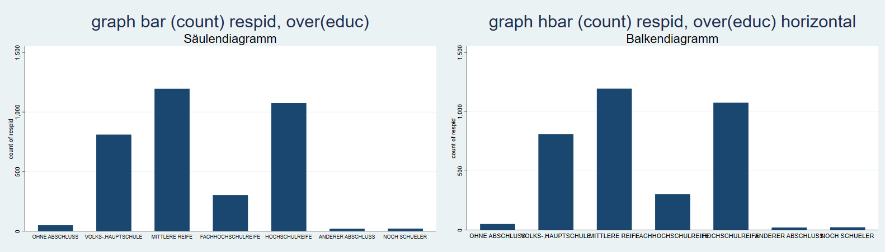
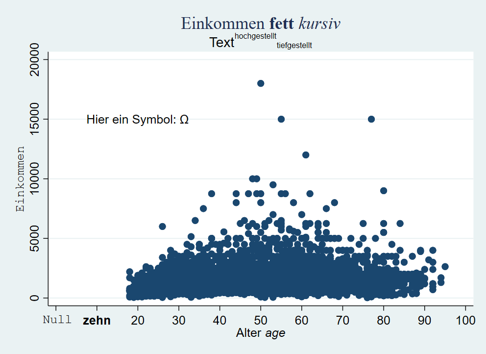
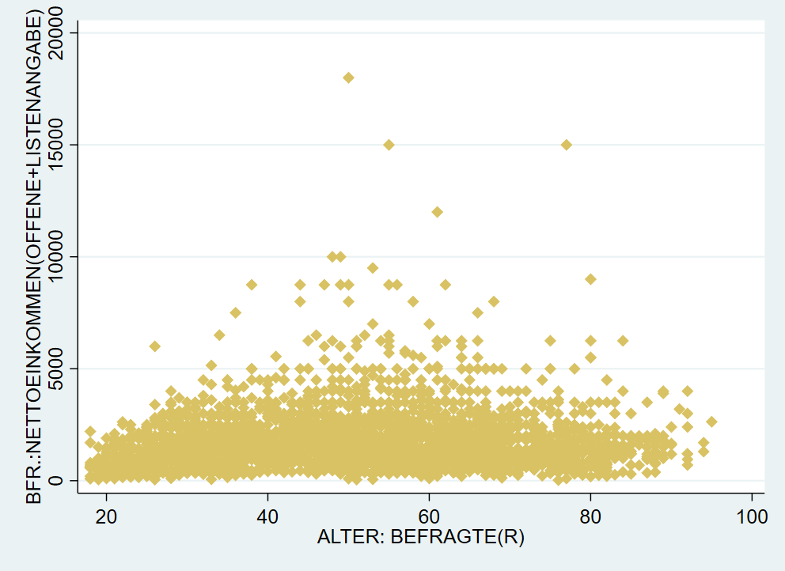
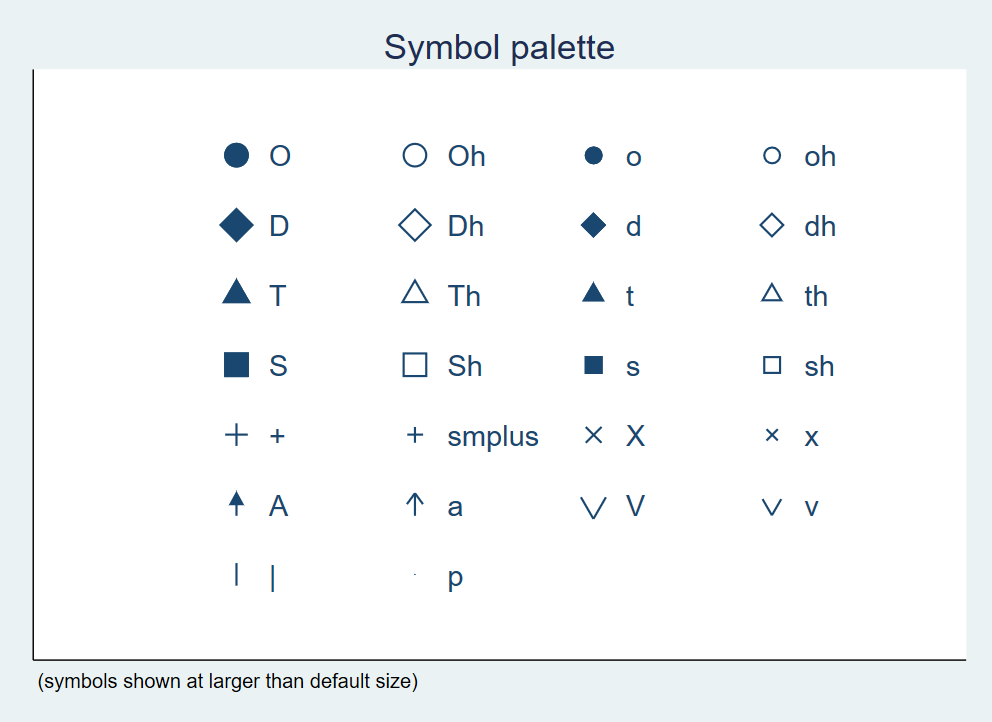
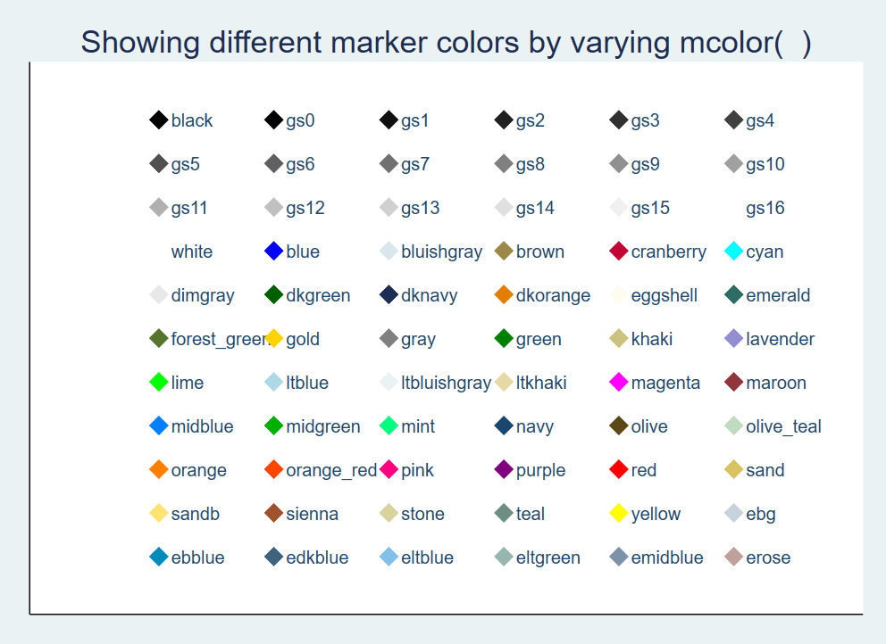
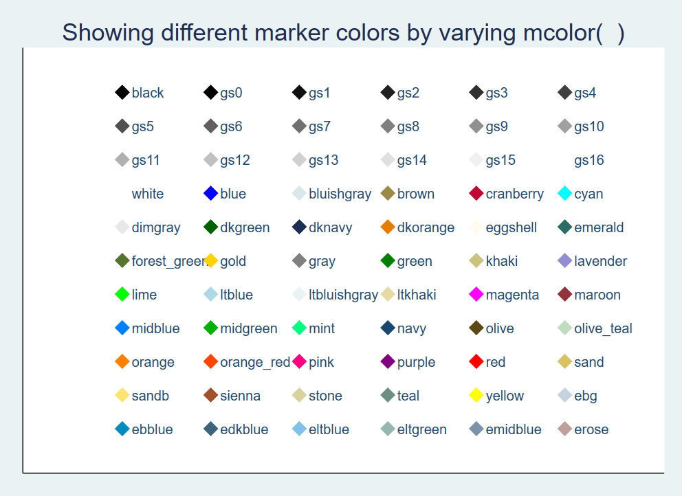
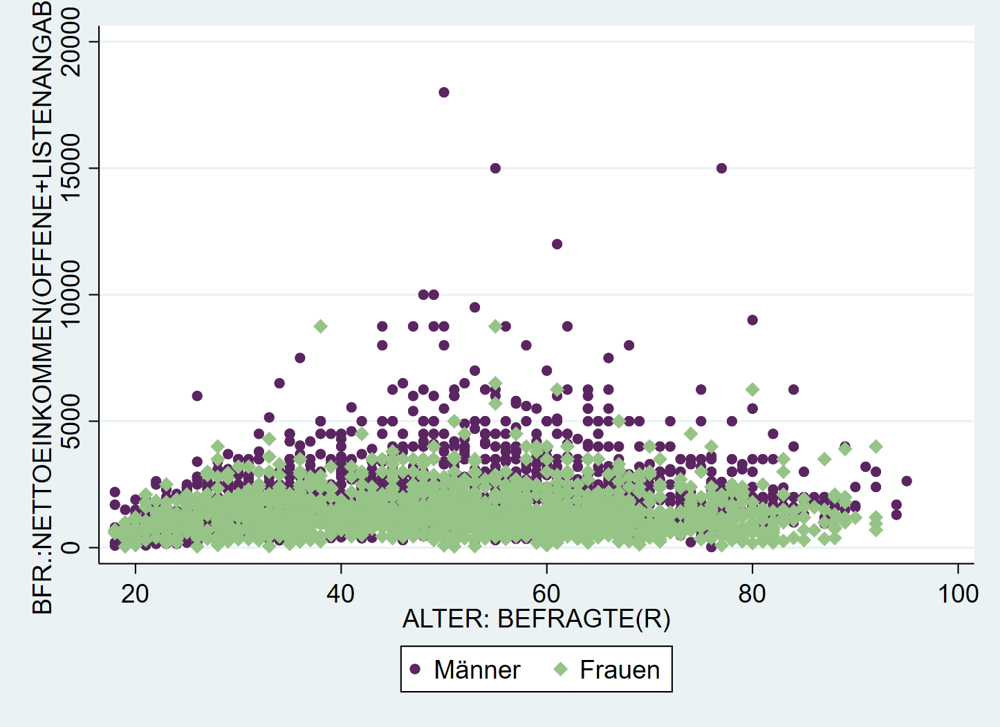
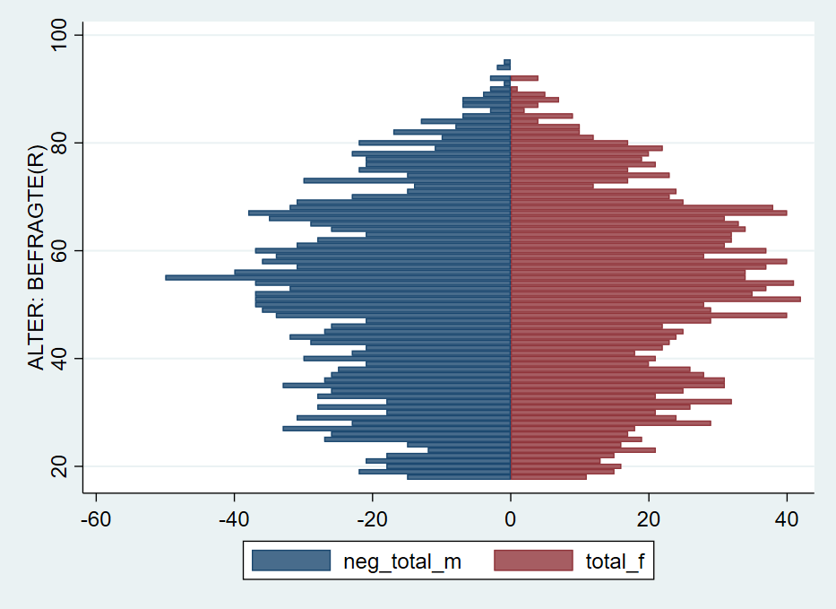

4 Datenvisualisierung in Stata
Wir starten wie immer mit dem Einlesen eines Datensatzes:
cd "..."
use "Allbus_2018.dta", clear
replace inc = . if inc < 0
replace educ = . if educ < 0
replace age = . if age < 0Für Grafiken gilt noch mehr als für alle anderen Aspekte in Stata: ausprobieren und sehen, was passiert! Nachdem in der Regel ja zumindest eine ungefähre Vorstellung existiert, wie die zu erstellende Grafik aussehen soll, sind Grafik-Gallerien ein guter Startpunkt das eigene Trial & Error. Die größte Herausforderung ist häufig, eine Vorstellung zu entwickeln, wie die Darstellung aussehen soll. Daher im Folgenden einige Beispiele für verschiedene Anwendungsfälle. Diese lassen sich ganz grob entlang zweier Fragen einteilen:
- Soll eine oder mehrere Variablen dargestellt werden?
- Was ist das Skalenniveau der darzustellenden Variable(n)?
Grundsätzlich bestehen Grafik-Befehle aus zwei Teilen: dem Befehl graph und der Angabe eines Grafik-Typs.
4.1 Visualisierung einer Variable
4.1.1 metrische Variablen
Die Verteilung metrischer Variablen (wie z.B. die Einkommensangaben in inc) können als Boxplot, Histogramm oder kdensity dargestellt werden. Während Histogramme und K-Density-Plots die Häufigkeit von Ausprägungen innerhalb von Wertebereichen zeigen, fassen Boxplots die Lagemaße zu einer Darstellung zusammen - mehr dazu hier hier.

4.1.2 Kategoriale Variablen
Die Darstellung einer kategorialen Variable ist häufig eine grafische Übersetzung einer Häufigkeitsauszählung. Insbesondere bieten sich dafür Säulen- und Balkendiagramme an. Beispielsweise könnten wir die Schulabschlüsse der Befragen auszählen. Dazu zählen1 wir die respids pro Ausprägung von educ2, mit graph bar bzw graph hbar bekommen wir dann ein Säulen- bw. Balkendiagramm.

4.2 Verteilungen vergleichen mit Facetten
In der Regel wollen wir aber Verteilungen vergleichen, wie wir das auch schon in Kapitel 3 mit Hilfe von Tabellen und Kennzahlen getan haben. Hier hilft die Option by weiter. Wir hängen an die Befehle von oben einfach ,by (sex) an, um getrennte Darstellungen für Männer und Frauen zu bekommen:
graph box inc, by(sex)
histogram inc, by(sex)
twoway (kdensity inc), by(sex) // zur Bedeutung von twoway gleich mehrDas funktioniert auch für die Säulen- und Balkendiagramme:

4.3 Gemeinsame Verteilung zweier Variablen
4.3.1 Mosaikplot
Für die gemeinsame Verteilung zweiter kategorialer Merkmale empfiehlt sich ein Mosaikplot. Dafür gibt es aber keinen Standardbefehl in Stata, sondern wir müssen den Befehl spineplot erst installieren:
Ein Mosaikplot stellt die bedingen Häufigkeiten dar: die Breite der Säulen wird durch die Größe der Altersgruppen bestimmt. Die Anzahl der Befragten aus den jeweiligen Kategorien von educ bestimmen dann jeweils die Farbanteile innerhalb der Säulen.
4.3.2 Streudiagramm
Eine sehr weit verbreitete Darstellung für zwei metrische Variablen ist das sog. Streudiagramm (“scatter plot”), dieses bekommen wir mit twoway scatter. Bspw. können wir die gemeinsame Verteilung des Alters und des Einkommens der Befragten so darstellen:

4.4 Weitere twoway Grafiken
Eben kam bereits der Befehl twoway vor. twoway stellt eine ganze Reihe an Darstellungen zur Auswahl, die wir hier nicht besprochen haben. Eine Übersicht zu allen verfügbaren Visualierungen inklusive Beispielbefehlen findet sich beispielsweise hier oder hier.
4.5 Kombinieren von zwei twoway-Grafiken
Eine besonders hilfreiche Funktion ist das Übereinanderlegen mehrer twoway Grafiken. Dazu hängen wir die Befehle mit (scatter ...) (scatter ...) einfach aneinander. Mit dieser Strategie können wir zwei nach Geschlechtern getrennte Streudiagramme aufeinander legen und so die Punkte farblich unterscheidbar machen:
 Hier haben wir also jetzt blaue Punkte für
Hier haben wir also jetzt blaue Punkte für sex == 1 und rote Punkte für sex == 2. Leider sagt uns die Legende aber überhaupt nichts dazu. Dazu kommen wir gleich.
4.6 Optionen
Diese grundlegenden Darstellungen können mit Hilfe einer ganzen Reihe an Optionen angepasst werden. Auch hier beschränken wir uns auf die wesentlichsten Optionen:
4.6.1 Titel
Eine klare Beschriftung ist zentraler Bestandteil jeder Datenvisualisierung. Folgende Überschriften stehen uns dazu zur Verfügung:
graph ...., title("Titel") subtitle("Untertitel") xtitle("x-Achsentitel") ytitle("y-Achsentitel") caption("Bildunterschrift")
Weitere Optionen unter help title_options.
4.6.2 Achsenbeschriftung
Außerdem können wir die Achsenbeschriftungen verändern - hier ein Beispiel für die x-Achse3
xscale(range(0 100)) \(\rightarrow\) x-Achse auf 0-100 ausdehnen
xtick(0 (10) 100 ) \(\rightarrow\) an allen Zehner-Grenzen zwischen 0 und 100, 0(10)100 ist die Abkürzung für 0,10,20,30,40,50,60,70,80,90,100
xlabel(0 "Null" 10 "zehn" 20 (10) 100) \(\rightarrow\) Beschriftung der “ticks”

Mehr Optionen finden sich unter help axis_label_options. Bspw. kann man mit xlabel(..., alternate) die Achsenlabels nach oben und unten verschieben.
4.6.3 Text einfügen
Wir können mit text() auch ein Text auf der Grafik positionieren - wie geben erst die y-Koordinate, dann die x-Koordinate an und dann den gewünschten Text:

4.6.4 Schriftart
Eine Reihe an Schriftarten stehen für Textangaben zur Verfügung:
graph twoway scatter inc age, title("{stSerif:Einkommen {bf:fett} {it:kursiv}}") subtitle("Text{superscript:hochgestellt}{subscript:tiefgestellt}") xtitle("Alter {it:age}") ytitle("{stMono:Einkommen}") xlabel(0 " {stMono:Null}" 10 "{bf:zehn}" 20 (10) 100) text(15000 20 "Hier ein Symbol: {&Omega}") xscale(range(0 100))
Mehr dazu unter help graph_text
4.6.5 Legende
Oben hatten wir gesehen, dass die automatische Legende nicht unbedingt aussagekräftig ist. Mit der Option legend können wir die Legende beschriften und einen Titel vergeben:
graph twoway (scatter inc age if sex==1) (scatter inc age if sex==2), legend(lab(1 "Männer") lab(2 "Frauen") title("Geschlecht"))
Mit der Option pos können wir außerdem die Position der Legende anpassen - wir geben dabei eine Zahl zwischen 0 und 12 an. Die Werte 1-12 entsprechen die Stunden auf einer Uhr, 0 setzt die Legende in die Mitte der Grafik.
graph twoway (scatter inc age if sex==1) (scatter inc age if sex==2), legend(lab(1 "Männer") lab(2 "Frauen") title("Geschlecht") pos(9))
Weitere Optionen und Beispiele unter help legend_options. Mit legend(off) kann die Legende auch ausgeblendet werden.
4.6.6 Marker
Im Stata-Jargon werden die Punkte “marker” genannt. Deren Aussehen können wir mit entsprechenden Optionen ebenfalls verändern. Zum einen können wir mit msymbol die Form des Markers verändern, mit msize können wir die Größe und mit mcolor die Farbe anpassen:

Dabei können wir aus einer Reihe an Formen, Größen und Farben wählen:
 

In unserem Beispiel vorhin hatten wir die Farben der marker aber genutzt, um die Angaben für Männer und Frauen zu unterscheiden. Hier geben wir dann mcolor etc. jeweils innerhalb der Klammern an:
graph twoway (scatter inc age if sex==1, mcolor(orange) msize(small)) (scatter inc age if sex==2, mcolor(sand) msymbol(D) msize(small)), legend(lab(1 "Männer") lab(2 "Frauen")) 
Mit mlcolor und mlwidth können wir jedem marker die Farbe und Dicke4 der Umrandung angeben:
graph twoway (scatter inc age if sex==1, mcolor(orange) msize(small) mlcolor(gs3) mlwidth(vthin)) (scatter inc age if sex==2, mcolor(sand) msymbol(D) msize(small) mlcolor(gs3) mlwidth(vvthin)), legend(lab(1 "Männer") lab(2 "Frauen")) 
4.6.7 Farben
Obwohl es um Darstellungen geht, haben wir noch sehr wenig über Farben gesprochen. Neben den oben gezeigten vordefinierten Farben können wir auch Farben als RGB-Codes5 angeben und so Farben eigenen Paletten verwenden:
graph twoway (scatter inc age if sex==1, mcolor("91 37 97") msize(small)) (scatter inc age if sex==2, mcolor("150 196 134") msymbol(D)), legend(lab(1 "Männer") lab(2 "Frauen"))
Außerdem können wir mit plotregion(fcolor( )) und graphregion(fcolor( )) die Hintergrundfarben der Grafik und des Koordinatenbereichs anpassen. Mit region(fcolor( )) können wir die den Hintergrund der Legende verändern.
graph twoway (scatter inc age if sex==1, mcolor("91 37 97") msize(small)) (scatter inc age if sex==2, mcolor("150 196 134") msymbol(D)), legend(lab(1 "Männer") lab(2 "Frauen") region(fcolor(red))) plotregion(fcolor(eltblue)) graphregion(fcolor(olive_teal))
Farbpaletten sind ein Thema für sich und was gut aussieht ist natürlich subjektiv…. (das letzte Beispiel wohl eher nicht). Allerdings gibt es einige Leitlinien, siehe hier. Es gibt zahlreiche Möglichkeiten selbst zu erstellen: zB. mit Adobe Color oder Paletton. Außerdem gibt es unzählige Quellen für Farbpaletten: Instagram oder ColorBrewer
4.6.8 Vorlagen
Eine Alternative ist auf Grafik-Schemata zuzückzugreifen. Beispielsweise wird mit , scheme(sj) die Grafik nach den Vorlage des Stata Journals erstellt:

Mit graph query, schemes wird eine Liste der verfügbaren Schemata angezeigt.
Weitere Optionen bieten zB die blindschemes von Daniel Bischof. Diese müssen zunächst mit ssc install blindschemes installiert werden und stehen dann zur Verfügung, zB
Hier noch ein Beispiel mit plotplain aus blindschemes:

4.7 Gruppierte Darstellungen
Neben ,by() können wir in graph box auch
4.8 Beispiele zum selbst anpassen
Im Folgenden finden sich nun einige Beispiele mit (sehr) vielen Optionen als Vorlage für eigene Anpassungen. Trial & error wärmstens empfohlen!
4.8.1 Boxplot
Für gruppierte Boxplots (hier nach Geschlecht) muss die dargestellte Variable zunächst aufgesplittet werden. Hier findet sich das (DoFile) zur Aufbereitung.
graph box inc inc_f, over(age_c) ///
scheme(lean1) ///
box(1, color("0 41 93")) marker(1, mcolor("0 41 93") msymbol("o") ) medline(lcolor("204 175 105")) /// optionen box1
box(2, color("146 143 107")) marker(2, mcolor("146 143 107") msymbol("o") ) /// box2 anpassen
legend(cols(2) pos(12) region(fcolor("249 247 241") lcolor("16 74 138"))) /// Legende
ytitle("{stSerif:Einkommen}{superscript:2018}") b1title("Alter") /// Achsenbeschriftung
title("Einkommen") caption("{bf:Quelle}: Allbus 2018 {it:eigene Berechnungen}",position(5)) /// titel usw.
plotregion(fcolor("252 251 248")) graphregion(fcolor("249 247 241")) // Hintergrundfarben
4.8.2 Scatterplot
Auch die Darstellung auf der Startseite dieses Skripts wurde als Stata-Grafik erstellt:
graph twoway ///
( scatter bp_before bp_after if agegrp == 1, mc("0 62 81") msymbol(o) ) /// Altersgruppe 1 -> dunkle Punkte
( scatter bp_before bp_after if agegrp == 2, mc("0 125 186") msymbol(d) ) /// Altersgruppe 2 -> blaue Rhomben
( scatter bp_before bp_after if agegrp == 3, mc("214 210 196") msymbol(s) ) /// Altersgruppe 3 -> Vierecke
, scheme(lean2) /// Schema
legend(lab(1 "30-45") lab(2 "{stMono:46-59}") lab(3 "60+") lcolor("16 74 138") region(fcolor("249 247 241") lcolor("16 74 138")) pos(6) cols(3) ) /// legende -> 3 Spalten
xtitle("{stSerif:Blutdruck nachher}") ytitle("{stMono:Blutdruck vorher}") /// Achsenbeschriftung
text(185 172 "Ein Text" "über {stSerif: 2} Zeilen") title("{&Delta}p={stSerif:R}*V") // Textfeld einfügen
4.8.3 Bevölkerungspyramide
Häufig ist die größte Herausforderung, die Daten so umzustellen, dass sie zum gewünschten graph-Befehl passen. Ein Beispiel ist die Erstellung einer Bevölkerungspyramide aus den Allbusdaten:

Auch diese Bevölkerungspyramide lässt sich als Stata-Grafik erstellen. Allerdings müssen dazu einige Zwischenschritte durchlaufen, die fortgeschrittene Datenaufbereitung mit collapse voraussetzen. Außerdem könnte ein Teil der Aufbereitung mit separate abgekürzt werden. Mehr Informationen dazu finden sich am Ende dieses Skripts in Kapitel 11.
Die grundsätzliche Funktion für die Bevölkerungspyramide ist ein Balkendiagramm mit graph twoway bar , horizontal. Die Länge der Balken soll jeweils durch die Anzahl der Fälle in jeder Altersstufe, getrennt nach Geschlecht, bestimmt werden. Dazu müssen wir also zunächst die Anzahl der Befragten pro Alterstufe und Geschlecht bestimmen. Wenn wir den Allbus 2018 laden, haben wir ja einen Datensatz mit einer Zeile pro Person. Was wir jetzt aber benötigen ist eine Variante, in der wir den Datensatz sozusagen “zusammenschieben”: wir brauchen jeweils eine Zeile pro Altersstufe und Geschlecht und eine Variable mit der Zahl der Befragten.
age sex Anzahl_Befragte
1 18 1 15
2 18 2 11
3 19 1 22
4 19 2 15
5 20 1 18
6 20 2 16Um dorthin zu kommen, steht uns der collapse-Befehl zur Verfügung:
cd ""
use "Allbus_2018.dta", clear
tab agec
keep if sex > 0
keep if agec > 0
collapse (count) respid , by(sex age)
list in 1/8Unter respid ist jetzt die Zahl der Befragten in der jeweiligen Kombination aus age und sex abgelegt:
age sex respid
1 18 1 15
2 18 2 11
3 19 1 22
4 19 2 15
5 20 1 18
6 20 2 16
7 21 1 21
8 21 2 13Um verwirrung zu vermeiden, benennen wir respid in total um:
Allerdings möchten wir jetzt die Angaben für Frauen und Männer in getrennte Variablen ablegen.6
age sex total total_m total_f
1 18 1 15 15 .
2 18 2 11 . 11
3 19 1 22 22 .
4 19 2 15 . 15
5 20 1 18 18 .
6 20 2 16 . 16
7 21 1 21 21 .
8 21 2 13 . 13
9 22 1 18 18 .
10 22 2 15 . 15Jetzt können wir daraus ein Balkendiagramm erstellen:
 Was hier noch fehlt ist, die Umorientierung der Zahlen für die Männer “nach links”. Dazu multiplizieren wir
Was hier noch fehlt ist, die Umorientierung der Zahlen für die Männer “nach links”. Dazu multiplizieren wir total_m mit -1:
Damit dann verwenden wir neg_total_m für die Balken der Männer:

Mit xlabel und legendnoch einige Anpassungen, außerdem können wir mit text noch Beschriftungen hinzufügen:
twoway( bar neg_total_m age, horizontal )(bar total_f age, horizontal) ,xlabel( -40 "40" -30 "30" -20 "20" -10 "10" 0 10(10)40 ) legend(off) text(100 -8 "Männer") text(100 8 "Frauen")
4.9 Anhang
4.9.1 Aufbereitung für Boxplot
4.9.2 Boxplot
Definition der Bestandteile eines Boxplots:
- ggf. Ausreißer
- unterer Whisker:
q1 - 1.5* IQR - untere Grenze: 1. Quartil
- mittlere Linie: Median
- obere Grenze: 3. Quartil
- oberer Whisker:
q3 + 1.5* IQR - ggf. Ausreißer
Die Box enthält also die zentralen 50% des Wertebereichs.

Daher die Angabe
(count).↩︎over(educ)legt dabei fest, dass innerhalb der Kategorien voneducgezählt werden soll.↩︎für die y-Achse funktionert das genauso, lediglich mit
yticksusw.↩︎Zur Auswahl stehen:
vthin,thin,medthin,medium,medthick,thick,vthick,vvthick,vvvthick↩︎RGB steht dabei als Abkürzung für die Anteile der Grundfarben Rot, Grün und Blau an der Mischfarbe.↩︎
Eine Abkürzung für diesen Schritt mit Hilfe von
separatefindet sich in Kapitel 11↩︎